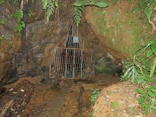
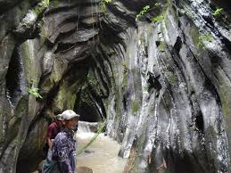

Deity/Focus: Dedicated to Jesus Christ – Christian Church
Built By: Khuangtuaha Pawl (non-denominational Christian group)
Solomon’s Temple Details
Construction: Started in 1996 and inaugurated in 2017
Architecture: Inspired by the biblical Solomon’s Temple; white marble-like façade, tall towers, prayer halls, open courtyard, and biblical inscriptions
Significance: Major religious and tourist site; accommodates 2,000 inside and 10,000 outside
Unique Feature: Combines biblical architecture with Mizo design sensibilities
Khuangchera Puk (Cave Temple)


Location: Near Ailawng village, close to Reiek, Mizoram
Name Origin: Named after legendary warrior Khuangchera
Type: Natural cave; not a formal temple
Khuangchera Puk Details
Historical Significance: Associated with Mizo folklore and bravery; believed to be a hideout or sacred space
Tourist Attraction: Popular for trekking and adventure; surrounded by scenic Reiek Hills
Cultural Importance: Reflects tribal legends and heritage; respected as a cultural site
Worship: No formal worship; serves as a cultural landmark rather than religious shrine